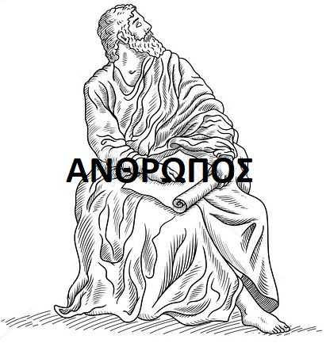

| Blog tap to sort |
|---|
-1- What is Dialectics?
Dialectics is (a)asking the right questions and (b)providing the right answers (c)with an eye to uncovering the truth (d)with regard to the issue under examination. |
|
-2- What is Horistics?
Horistics is the art of defining. Horistics (ὁριστική • ΟΡΙΣΤΙΚΗ) is the cornerstone of Dialectics. |
|
-3-  What is a man/ἄνθρωπος • anthropos? Αρχαια Ελληνικα
σημαίνει τοῦτο τὸ ὄνομα ὁ "ἄνθρωπος" ὅτι τὰ μὲν ἄλλα θηρία ὧν ὁρᾷ οὐδὲν ἐπισκοπεῖ οὐδὲ ἀναλογίζεται οὐδὲ ἀναθρεῖ, ὁ δὲ ἄνθρωπος ἅμα ἑώρακεν — τοῦτο δ᾽ ἐστὶ τὸ "ὄπωπε" — καὶ ἀναθρεῖ καὶ λογίζεται τοῦτο ὃ ὄπωπεν. ἐντεῦθεν δὴ μόνον τῶν θηρίων ὀρθῶς ὁ ἄνθρωπος "ἄνθρωπος" ὠνομάσθη, ἀναθρῶν ἃ ὄπωπε. Η λεξη ανθρωπος παραπεμπει στο οτι τα αλλα ζωα δεν εξεταζουν ή δεν μελετουν ή δεν κοιταζουν εξεταστικα ο,τι βλεπουν. Ο ανθρωπος ομως με το που πεσει στη αντιληψη του κατι, το κοιταζει και αρχιζει να αναλογιζεται σχετικα. Γι αυτον τον λογο, απο ολα τα ζωα, ο ανθρωπος ειναι το μονο ζωο που σωστα αποκαλειται "ανθρωπος" διοτι κοιταζει εξεταστικα ο,τι βλεπει. The name "man" (ἄνθρωπος) indicates that the other animals do not examine, or consider, or look up at (ἀναθρεῖ) any of the things that they see, but man has no sooner seen — that is, ὄπωπε — than he looks up at and considers that which he has seen. Therefore of all the animals man alone is rightly called man (ἄνθρωπος), because he looks up at (ἀναθρεῖ) what he has seen (ὄπωπε). (Socrates in Plato's Cratylus 399c, c. 425 BZ)
|
| Blog |